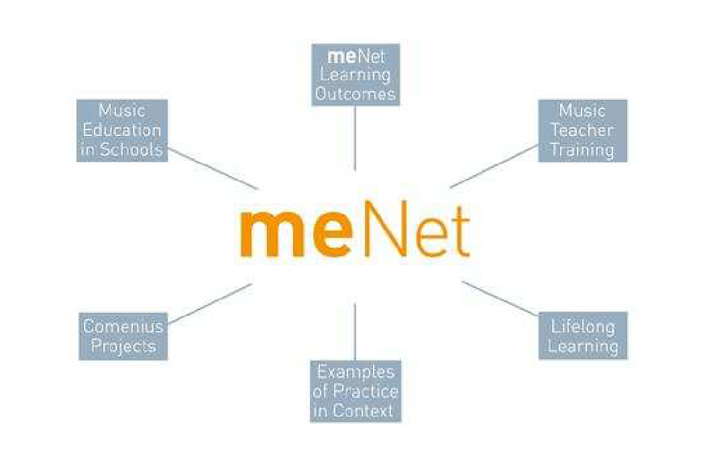
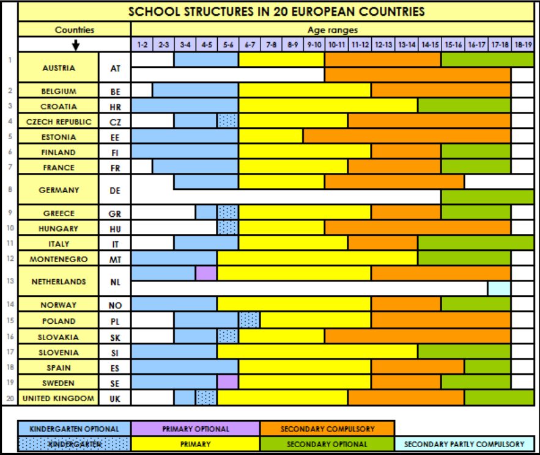
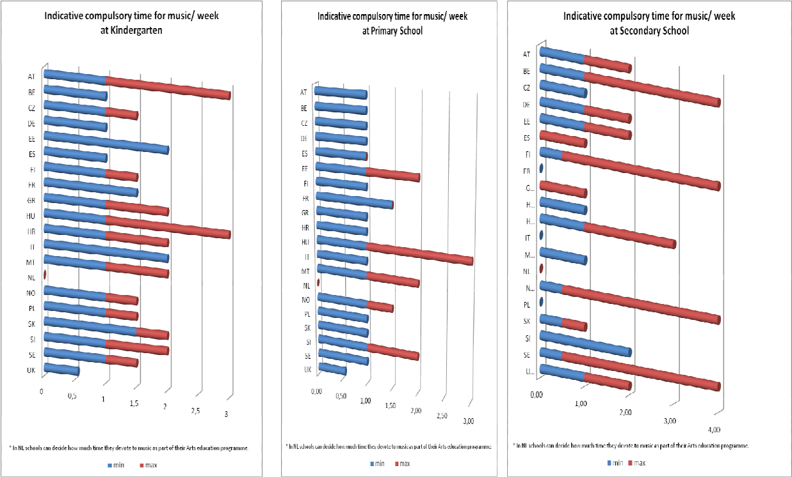
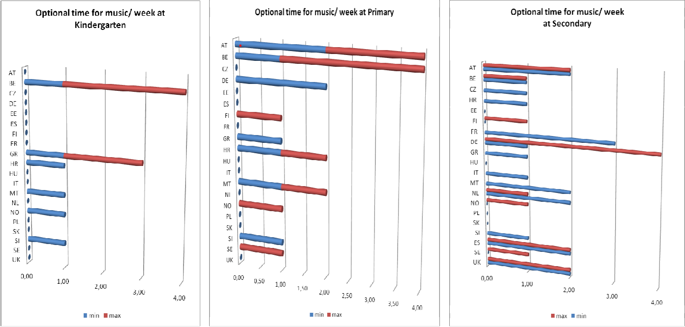

1. Introduction 1
The duration of the meNet project was from 10/2006 to 09/2009. Information can be found
on the platform created especially for this purpose, www.menet.info. The meNet project
groups worked on specific aspects of music education, as the following diagram shows:

The project was a partnership involving 26 active partner institutions from 20 European
countries including Austria, Belgium, Croatia, Czech Republic,
Estonia, Finland, France,
Germany, Greece, Hungary, Italy, Montenegro,
Netherlands, Norway, Poland,
Slovakia, Slovenia, Spain, Sweden, and the United Kingdom. In addition, 70 associated partner
institutions cooperated in the project in different ways.
One of the main aims of the project was investigating teaching and learning music at primary and secondary general schools and music teacher training in order to (a) make understandable and transparent the various theoretical and practical approaches to music education in Europe, (b) improve and increase the quality of music education as part of school curricula and (c) propose changes to school curricula and the content of training courses for music teachers.
2. Methodology
he current research design is located within the social-critical paradigm, whilst a qualitative methodology was used, supported by some quantitative elements, to analyse the data. The method of data collection involved collecting information on music education in schools in 20 different EU countries in order to gain insight into specific issues related to each country. For the data analysis, various official documents were also interpreted as a result of discussions with the project partners. Different graphs and tables were created to illustrate the bigger picture emerging from the data that led towards comparisons and generalisations. A variety of examples in context were mentioned within the project, of which two specific ones will be mentioned, supported by data derived from interviews with participant teachers and pupils. To increase the validity of the data presented, many revisions of project data were made by the project and associated partners. In addition, external help was sought in order to collect accurate information from non-project countries i.e. France, Italy, Hungary etc. As a result of the themes that emerged from the data analysis, the current presentation will try to highlight three main issues: (a) the current situation of music education across Europe, (b) examples of practice in context and (c) suggestions and guidelines for music education.
3. The current situation of music education across Europe
As a result of the Maastricht Treaty in 1992, new norms were imposed on all EU states in the field of education and cultural politics 2, which were nevertheless adopted in the intergovernmental agreements. Consequently there are many differences in the way different educational and cultural policies are put into practice in various countries (Obuljen, 2004). For that reason it makes sense to carry out comparative studies of the current situation of music education in the different countries across the EU. Kertz-Welzel (2008) stresses the necessity of focusing on comparative music education in the 21st century, as scholars and music teachers in many countries are struggling with similar problems such as teacher training, performance-based or general music education, classroom management or standards in music education. Τhe exchange between various traditions of music education can help in terms of developing more effective methods in comparative music education and in music education programmes for teachers. However, Kertz-Welzel (2004) stresses that the problem with most comparative music education research is that it usually tries to encompass a complete system without paying much attention to particular aspects. Comparative music education is concerned with the description and comparison of different systems of music education at national and regional level. The nature of studies in comparative music education can vary although single-system or comparative studies are most commonly used for describing the system of music education, its aims and curriculum (Kemp & Lepherd, 1992). This kind of comparative studies in music education seems to be relevant to the needs of all music teachers because today’s music classrooms are in a sense always multicultural beyond national boundaries, following some authors (Barth, 2000; Stroh, 2000) who argue that the teacher and the pupils always have different backgrounds (e.g. classical / hip-hop) irrespective of children’s nationalities.
The meNet project suggests that comparative music education issues can give music teachers a deeper understanding of music didactics in particular and of pedagogy in general. Besides, as some researchers underline (Schlegel, 2001; Rodríguez-Quiles, 2001; Dogani, 2004) music education in each European country has some diversity in relation to the way it is put into practice based on contextual and cultural factors. We will begin by presenting the forms of school organisation in 20 European countries.
3.1. School organisation
Prior to understanding the way music education is structured in the countries surveyed, a
consideration of the organisation of schools was considered crucial within the project. A
comparison of school structures in our 20 countries shows that there are differences in what
is considered to be “primary” and “secondary” education. There is variety in the starting age
for compulsory schooling. The following chart clarifies this:

Graph 1. School structures in 20 European countries
On the basis of the above chart, specific comments can be made for kindergarten, primary
and secondary levels.
Kindergarten. In most of the 20 countries, kindergarten is optional. From the analysis, it appears that in those countries music does not have a clear role to play in the curriculum as it is not prescribed clearly for this age range and is dependent on the teacher’s musical skills and abilities. In Spanish kindergartens, for example, music does not appear to be a separate subject, and the time children spend on music is not stipulated in the official documents. Only in six countries is kindergarten compulsory at three different starting ages, namely at age 4-5 in the UK, 5-6 in the Czech Republic, Greece, Hungary, and Slovakia, and 6-7 in Poland. In contrast to the situation of music in the previous countries, these countries exhibit a clearer framework for music. For example, in the UK and Greece, there is a clear framework for music with tentative recommendations for specific music activities in the curriculum, comprising the basic music activities of performing, composing, evaluating, listening, and applying knowledge, as the following chart shows:
| Framework for music at KINDERGARTEN in Greece | |
|---|---|
| Performing:Controlling sounds made with the voice and a range of instruments |
|
| Composing:Creating and developing musical ideas |
|
| Evaluating:Responding and revising |
|
| Listening and applying knowledge |
|
Primary education. Although in the majority of the countries (14 countries), school starts at age 6, the age of finishing primary school varies (in eight countries it is 12). The following chart also shows big differences between four of the project countries with respect to the character of schooling, the content of the curriculum, and the status of music. Although in all four countries primary education is compulsory, there are some in which there is flexibility in the school’s implementation of the curriculum, i.e., Germany and Spain. Within the curriculum, children have specific music tuition from music teachers with special music teacher training. Participation in a choir is compulsory only in Slovenia, following the country’s long choral tradition. In Germany and Greece, it is optional, but appears to be a common activity in schools.
| Comparison of PRIMARY SCHOOL structures in 4 countries | ||||
|---|---|---|---|---|
| PRIMARY SCHOOL | GERMANY | GREECE | SLOVENIA | SPAIN |
| Duration (in years) | 4 -most states 6 (in Berlin and Brandenburg states) | 6 years | 9 years | 6 years |
| Character | Compulsory | Compulsory | Compulsory | Compulsory |
| National curriculum | Each federal state has its own curriculum | Common curriculum guidelines with specific aims, objectives, content | Common curriculum with general aims, objectives, core contents, didactic principles, recommendations and knowledge standards | General guidelines which must be developed and implemented by each autonomous region |
| Autonomy of the school | Flexibility | No. Central curriculum. | No. Central curriculum. Syllabus proposed and implemented by each school (step 2). | Optional |
| Optional subjects | No | No | No | No |
| Children with special needs are included? | No, they go to special schools | No, they usually go to special schools | Yes | Yes, as an important aspect of the philosophy of the education law |
| Music teacher | Teachers with special music teacher training | Only music teachers with music teacher training teach | Teachers have special music teacher training | Teachers with special music teacher training 3 |
| Choir | Optional, although almost every school has a choir | Optional, there is usually a choir that performs at celebrations | Compulsory | Optional, very few schools have a choir |
Secondary education. In the four countries compared, secondary school starts at different ages from 10 or 12 and lasts to 15 or 16. In Slovenia, Croatia, and Montenegro, secondary education is purely optional. In the following two charts, some important differences can be seen between the four countries we chose to present in the current paper. The first table is related to general aspects of the different education systems in each country. The second refers to specific issues related to music education.
| General aspects of SECONDARY SCHOOL | ||||
|---|---|---|---|---|
| SECONDARY SCHOOL | GERMANY | GREECE | SLOVENIA | SPAIN |
| Duration | Secondary School I (compulsory): 6 years (class 5-10) 4 Secondary School II (Optional): 2-3 years (class 11-12 or 13) |
Secondary School (compulsory): 3 years Secondary School (optional): 3 years |
(Optional): 4 years (class 10-13) | Secondary School I (compulsory): 4 years (class 7-10) Secondary School II (optional): 2 years (class 11-12) |
| National curriculum | No. Each federal state has its own curriculum | Same curriculum for the whole country with general aims, objectives and contents. | Same curriculum for the whole country with general aims, objectives and core subject contents, didactic principles, recommendations and knowledge standards. | Each particular autonomous region develops and implements general guidelines for the whole country (step 1). |
| Autonomy of the school | Yes | No. Central curriculum. | No. Central curriculum. | Syllabus proposed and implemented by each school (step 2). |
| Optional subjects | Yes | No | Yes | Yes |
| Are children with special needs included? | No (they go to special schools) | No | Yes | Yes |
| Music teacher | Yes | Yes, graduates from music departments with musical pedagogical training. | Yes | Yes, but without specific musical pedagogical training; they are either musicologists or instrumentalists. |
| Choir | Optional. Almost every school has a choir. | Optional; a choir usually sings at celebrations | Compulsory in every school (all-girl, all-boy or mixed) for 4 h/week | Optional. Very few schools have a choir. |
| Music at secondary school | ||||
|---|---|---|---|---|
| GERMANY | GREECE | SLOVENIA | SPAIN | |
| General aspects | Each federal state has its own curriculum and its own syllabus for the subject of music | One curriculum for all schools | One curriculum for all schools. Great importance given to Slovenian traditional music | Each school can decide on the content of the curriculum – large differences between schools |
| Subject areas |
|
|
|
|
| Canon of works | Yes – it can vary from state to state | Yes – there is flexibility with regard to the content. A new anthology for secondary is out which is valuable for music teachers | Yes | There is no set canon of musical works that must be covered |
| Current important questions | After the PISA Study 5 there are some states in Germany (e.g. Lower Saxony) that think compulsory standards for music must also be introduced (as they exist for maths and the first language). | Need to strengthen music teachers’ training in music pedagogy. More time is needed for music and the existence of appropriate provisions for music in each school. |
Flexibility of the learning process Autonomy of teachers and pupils Quality of knowledge; connecting different subjects and disciplines |
The current political measures will lead to a decline in music education in Spain. The main problem is the insufficient training of music teachers. |
Looking at the above table, it can be said that in general, schools and individual teachers have autonomy as to what and how to teach music. However, there are big differences in the autonomy and organisation of the curriculum between Slovenia (centralised) and Germany, Greece, and Spain (decentralised). Although music in secondary schools is organised around specific musical activities such as (a) listening and understanding music, (b) performing, and (c) composing, in practice a more holistic approach to music education is usually adopted. This is made evident by the fact that music is often seen as a vehicle for developing wider cultural understanding by engaging in music from around the globe. In many countries, this is also seen as an important vehicle for preserving or establishing a national identity, and learners are often exposed to traditional folk culture music and dance. This is particularly prevalent in eastern European countries (Estonia, Greece, Poland, Slovakia, Slovenia, etc.).
An important question relates to the way the differences in the starting ages are affecting music education and consequently music teacher training. First of all, it can be said that due to these differences in school ages, there is no common developmental ground for all European children and teenagers. In addition to this, as the age increases, there is greater concentration on other subjects than music, i.e., in Greece music is not taught at all in the final years of secondary school (ages 15 - 18). In Spain, although at the moment there is music teacher training at universities for primary schools, not every school can have a well- trained music teacher because many members of the school staff do not regard it as strictly necessary. Music is still seen as a subordinate subject at school. However, although the situation was almost the same in countries like Greece, things have changed lately, and there is increased recruitment of music teachers at primary and secondary Hellenic schools. On the other hand, in some countries in the south of Europe like France, Greece, Italy, or Spain, although there is usually a music teacher in the secondary school, the lack of special music teacher training might be problematic since these teachers, who only hold a degree in musicology which is mainly based on the history of Western music, are asked to teach in general schools. These serious discrepancies between music education and music teacher training as well as the huge differences between the countries in southern Europe, central Europe, and northern Europe, need to change urgently within the European Higher Education Area (EHEA) and as a result of the Declaration of Bologna of the year 1999.
3.2. Importance of music in schools
In all 20 countries surveyed, the study of music in schools is seen as a valued and important component of compulsory schooling as demonstrated through education policies and expressed in national curricula. However, in some cases there is a contradiction between the “written curriculum” and the “curriculum in praxis”. The latter can be the result of a combination of curriculum guidelines and the teacher’s theoretical framework and educational philosophy in relation to the teaching of music (Dogani, 2004). This is the case in Spain, for instance (Rodríguez-Quiles, 2001). For that reason it is argued that studies on music education only based on official documents can only cover a part of the educational reality 6. Due to the existence of this contradiction it can be a difficult and sensitive matter to collect such information. Although the current research tried to present a picture of music education in the different European countries based not only on official documents but on individuals’ knowledge and experience each country’s situation, more research in this field is needed to cover the situation across Europe, especially using in-depth qualitative methods such as case studies, discussion groups, interviews and so on (Denzin & Lincoln, 2000; Patton, 2002). In addition, it would be important to involve all those who influence the process of teaching and learning music, that is politicians, heads of schools, music teachers, non-music teachers, pupils, parents but also music managers, music editors, journalists, etc.
The analysis of the data collected indicated that in the countries included there is a common belief that music is an important subject in the curriculum as it develops specific musical skills (performing, composing, listening and understanding), personal skills (creativity, self- identity and self-esteem, communication skills) and cultural awareness (global and national identity, cohesive community). However, the question needs to be asked why, despite this common understanding, those involved in education - even politicians! - adopt contradictory and weak policies for general school music in many countries, especially in the south of Europe. However, Estonia might currently represent a happy exception to this rule. One of the main strategies for developing Estonian society consists of two components: good education and singing, including choral singing. For that reason, one of the main goals of music teaching within the general education system is to preserve and maintain class="place" id="EE">Estonia cultural heritage and traditions. The case of Slovenia can also be of interest as music has a very good balance within the general curriculum and there is a close relationship between the national cultural context and music teacher training.
With reference to the content of the music lessons, it is sometimes adapted to the context of the beliefs and traditions of a specific country. The example of Estonia might highlight this point, as this tiny Baltic state is often described as a “singing nation”. Many would say that their singing tradition led to the bloodless establishment of the country’s independence in 1991 through the so-called “singing revolution”. Preserving national identity is often seen as a main goal within a music education system. In Slovakia and Hungary for instance, students are expected to be able to dance eastern European folk dances such as the polka and czardas. In Slovenia, great importance is attached to traditional music. In Greece, traditional singing and dancing are also part of general music education and are usually very much in evidence at school celebrations of national festivals. However, this is not the case for music education in Spain, despite the rich folklore with which the country is usually associated. This paper will, within its own constraints, try to highlight the latter using specific examples of practice in context for Slovenia and Spain.
Another point worthy of attention is the place of ensemble music making in schools. The current research underlined the need for further research in this area. However, it can be said that although all countries recognise the importance of being a member of a choir or an instrumental ensemble for one’s personal and musical development, the practical implementation of this is left largely to chance. Access to instrumental tuition is variable across Europe and is sometimes left completely outside the responsibility of the school system, thereby influencing the way music education is put into practice. In Belgium for example, young people are not offered the chance to learn to play an instrument in schools but these opportunities are available in special music schools which run in the evenings and at the weekends. In Slovenia, each school must have at least a choir and often a string orchestra. In Greece and in Spain, a choir might be organised as a result of a teacher’s disposition to do so and it is rather rare to have instrumental ensembles in general schools. The reasons for and constraints resulting from this great variability among the different countries examined in relation to ensemble music making need to be explored further.
3.3. Time allocation for music education
There are often national guidelines for the amount of curriculum time allocated to music but
it is mostly the case that individual school managers have a good deal of autonomy when it
comes to deciding how much time is actually allocated to music education. The following
diagram provides an overview of time allocation for music education in Europe:

In the above table it can be seen that in the majority of the countries music takes place for
• 1 hour per week at kindergarten and primary level with a maximum of 2-3 hours in
certain countries and
• 1 to 4 and 5 hours per week in the secondary schools
Indeed there are some countries in which the time devoted to music is not necessarily
compulsory or can be supplemented by additional optional time depending on the resources
of the individual school and the importance attached to music education by the school
managers.

It is evident that there are big differences as to what primary and secondary school might
mean which has a lot of implications for the way music education is put into practice in the
different countries. Two interesting facts emerge from the analysis: (a) almost all countries
share the same amount of music lessons per week in primary school but (b) there are big
differences in secondary school.
4. Examples of Practice in Context
Within meNet, specific examples of practice were chosen to demonstrate
- the diversity and richness of actual practice in schools across Europe
- the way different aspects of music learning are emphasised
- characteristic and sustainable practice
- innovative practice
Example 1 - Slovenia: “Integrating folk music into the primary music curriculum” 7
Main purpose: to develop pupils’ sensibility and positive attitude towards their national
musical heritage and their cultural identity.
Example 2 - Spain: “Beyond the sound: socialising through music at school” 8
Main purpose: to help pupils from disadvantaged backgrounds to socialise through music at school
4.1. Example 1 - Slovenia: “Integrating folk music into the primary music curriculum”
Introduction. The first example of music teaching in a primary school in Slovenia is a typical example of practice that focuses on an integrated approach in which Slovenian folk music is presented to the children in a manner that is close to their current experiences. The ultimate aim is to develop pupils’ sensibility and positive attitude towards their national musical heritage and cultural identity. Given the emphasis within the Slovenian curriculum on Slovenian folk music, the role of the teacher role in this transmission process is crucial. However, the latter can be problematic due to teachers’ unfamiliarity with the folk material of dance and music as a result of insufficient inclusion of folk music in teacher training or in- service teacher training programmes as well as the current trend towards globalisation. For that reason, encouraging new ideas and methods for approaching folk music in Slovenian teaching practice appears to be crucial in reconnecting teachers and children with their folk roots. By means of an intercultural approach the example also promotes opportunities for cultural diversity.
The example. The example presents an effective approach of active learning through the interaction of listening, creative movement and dance activities. The content is a musical fairytale titled “The Shepherd and the Bewitched Princess” based on folk music from different regions of Slovenia (Pomurje, Štajerska) and from Rezija (Slovenian ethnic minority in north-eastern Italy). In their creative responses to the music, children spontaneously used some elements from Slovenian folk dances, such as twirling and stepping, or adapted Slovenian folk dances. They internalised musical language and expressed it through spontaneous movements. The example was developed gradually in music lessons over the course of four weeks with children attending the 3rd class of primary school (aged 8). Within the musical aims of the lesson, the children were to improve not only their ability to listen attentively to Slovenian folk music pieces but also to develop their expressive responses to the character of the music and the musical elements through creative 15 movement and dance. In addition, specific aims related to psychomotor and affective areas were to develop the children’s spatial awareness, coordination, communication skills, interpersonal relationships and independent learning. The lesson included specific steps that would lead to the final performance. After listening to the fairytale and Slovenian folk music, the children expressed some parts of the story through creative movement and dance figures, while creating common movements through group work for another part of the story. The groups presented their work and reflected on it based on the following questions: “How were you feeling? What were you satisfied with? What additional suggestions do you have? What changes would be needed?” etc. As a result of the evaluation process they made suggestions for improvement which were included in their presentations and they ultimately connected all the parts of the story in common group presentations. They staged the fairytale along with musical accompaniment and narration by the teacher. The class performances were followed by public presentations to the pupils’ parents, some neighbouring primary schools and at the Faculty of Education, University of Ljubljana.
Impact of the lesson on the participants. Specific comments from the pupils and the teachers as well as the parents will be presented to gain insight into the impact of the specific lesson and the performance on them. After the performance, pupils expressed the great interest and joy they derived from moving and dancing to folk music that now seemed familiar to them, as “I heard on the radio the same music I was dancing to as the witch”. After the performance, the teachers commented that they noticed pupils’ enjoyment and found it an “interesting combination of tradition and the present day that really attracts pupils! Most importantly, all children participated and felt the structure of Slovenian folk music and danced to it as if they had known it forever”. In addition, in student teachers’ reflections after seeing the performance it is evident that they considered “the combination of fairytale and dance an excellent starting point for interdisciplinary connections”. They also commented that “from a pedagogical point of view, folk music is much closer to the child and more appreciated; so much interesting and diverse music!” Finally, the parents were also moved by the performance: “I was moved; it was as though I was looking at myself at that young age.” More importantly, it seemed that they started appreciating folk music themselves. They admitted that “old folk music is so simple and so rich... Children get familiar with folk music; in our house we almost never listen to it.”
Key outcomes. By looking at the whole picture emerging from this lesson, specific key outcomes can be mentioned. These are that the pupils:
- appreciated and listened attentively to folk music; used folk music to distinguish specific musical elements in it, such as tempo (faster from slower), dynamics (louder from softer), structure (repetition and contrast);
- explored, chose and organised movement ideas; used movement skills and orientation in space; expressed the musical elements through creative movement, developing their coordination;
- developed their personal skills such as their self-esteem, self-confidence, attentiveness, independent learning, interpersonal relationships and communication.
4.2. Example 2 - Spain: “Beyond the sound: socialising through music at school”
Introduction: The second example presents the work done at a particular secondary school in Spain in which music is used in a multidisciplinary way and as part of the compulsory curriculum, to motivate students from disadvantaged backgrounds in both educational and social dimensions 9. The data was collected during the year 2008, a time at which the project had already being running for a decade.
The students are 12-16 years old and they belong to different ethnic minorities of which 20- 35% are gypsies. There is a wide ability range among the students and at the same time specific problems are mentioned related to school absenteeism (20%), family breakdowns, aggressive behaviour, low attainment levels at entry to secondary school and a high dropout rate (14%). The impetus for the project was the interest of a group of teachers to find an approach that, by focusing on diversity, would enable them to integrate students from difficult environments and motivate them both socially and educationally by working in music and the arts. The project aimed to increase not only their self-confidence to learn but also their appreciation of the possibilities that the school can offer them. Thus, the focus was not only on learning music but also on acquiring social skills such as respecting rules, respecting and listening to each other, working cooperatively, expressing emotions. In addition, learning to comply with time limits seemed to be an important life skill to be acquired, especially for gypsy students. A characteristic of gypsy people that the teachers were well aware of is that they perceive the passage of time differently from non-gypsy people. This has implications on the way they perceive not only music but their whole life. Based on such inside knowledge of their groups of students, the teachers organised the whole range of activities to help them in all areas of their development.
The example. This example is an innovative and unique practice in the Spanish context that supports and promotes inclusion, opportunities for reflective practice in evaluation and assessment and opportunities to innovate and become critical. Most of the teachers at this school have adopted a multidisciplinary approach to learning in which subjects that are considered to foster students’ socialisation such as music, arts and sport are taken as a reference point for a lot of activities that are included as a normal part of their curriculum. This is evident in the following comment made by one of the teachers at the school:
- teachers use music as a methodological approach for educating sensibility, self- control and the values of peace and non-violence in difficult social contexts;
- students learn to use different sources of information (musical, historical, graphical, journalistic) for their own musical and artistic creation;
- students are encouraged to participate in musical activities both individually and in groups, with an open, interested and respectful attitude;
- teamwork is promoted not only among students but also among teachers through cooperating interdepartmentally on multidisciplinary ways of working
The whole project is based on practical music lessons (i.e. singing, playing instruments, dancing) in which Edgard Willems’ method is used to teach solmisation, vocal and aural training. Regular workshops are organised in cooperation with the art teacher (i.e. painting in response to musical composition, making hand puppets for a musical show or making costumes for an opera) and the participation of other teachers and parents. It is important to stress that
It appears that the school adopts a flexible approach to the use of space, time, groupings and the deployment of the teaching staff 11. The whole school atmosphere aims to stimulate children’s aesthetic sensitivity; posters and background music related to current musical events and issues is constantly present in the whole building (e.g. Mozart’s anniversary, Pavarotti’s death). This influences the teaching staff in a positive way:
Key outcomes. The project presented has a positive impact on various parts of the community. Not only the teaching staff supported the project and worked actively for this model of education, but also the whole community accepted music as an important subject. The students have shown the benefits of their participation in the project as there has been a decrease in the numbers and severity of different conflict situations and a decrease in student failure rates from 60% to 16%. Absenteeism has dropped from 18% to 14% and the dropout rate has fallen slightly. In general, students display a more positive attitude and greater sensitivity towards listening not only to music but also to other people. This was affirmed by the art teacher who noticed that “it is evident that pupils love what they listen to here in the school […]. Some of them have even changed their behaviour thanks to their participation in the choir […] because music has entered their lives in a way it didn’t do before.”
As a result of participation in the project, other curricular development projects are proposed in the school relating to music and focusing on diversity through music and on developing emotional education at secondary school to improve coexistence through cooperative work. The school has also won many awards at local and national level.
Most of all, the positive personal experience of the students is the biggest success of the project. The following comment by a 10th grade student to her music teacher sums it up:
4.3. Comparing the two examples
- A common problem was raised in both countries: teachers often neglect folk music because they are not familiar enough with the richness of this music and dances and do not have enough knowledge to teach them. This is also due to the fact that folk music is not given adequate emphasis either in University teacher training programmes or in programmes of in-service teacher training.
- An important difference between the two countries: the Slovenian curriculum clearly stipulates the integration of local and national music in everyday practice. The Spanish curriculum is much more open: although the curriculum suggests what can be included or excluded in it, it is up to each particular school to decide what to do or what not to do. It is remarkable that in the Spanish school (of this particular example) it was understood that it was very important also to pay attention to the music pupils consider as their “own” music (flamenco, hip-hop…) without simply considering the “music of the teacher” (that is, western classical music) as the only important music.
Outcomes emerging from pupils’ involvement in both cases:
Pupils
- displayed a more positive attitude and greater sensitivity towards listening (not only to music but also to other people)
- expressed great interest in and derived great enjoyment from movement and dancing
- appreciated and used music
- developed their self-esteem, self-confidence, attentiveness, independent learning, interpersonal relationships, communication skills
- gradual awareness of cultural diversity in a global world Common musical aims
- attentive listening to (folk) music pieces, expressive responses to the character of music and the musical elements through creative movement, practical class music lessons including singing, playing instruments, dancing Common aspects
- using music as a methodological approach to educate sensibility, self-control and the values of peace and non-violence.
- participation in musical activities both individually and in groups with an open, interested and respectful attitude.
- promoting teamwork among pupils in order to benefit from cooperative work based on the values of collaboration and solidarity
- independent learning
It is really interesting that both cases offer good possibilities for
- building close cooperation with other schools which are in a similar situation
- dissemination into everyday teaching practice through programmes of in-service teacher training
- dissemination into other cultural contexts by means of a multicultural approach
Following these two examples, we see that it is necessary and useful to be able to interlink music education in the different systems and to rethink what music in present democratic societies should mean for children’s holistic education, as all European countries without exception assert, at least in a theoretical way. More than that, these examples show that it is possible to develop common understanding beyond geographical borders and it need not necessarily be difficult to agree on basic common principles for music education in the framework of the European Union.
5. Some general conclusions
The difficulty of collecting information based on the parallel existence of a “written curriculum” and a “curriculum in praxis” demonstrates how important it is to collect this information. However, the current project has only scratched the surface. More in-depth work is needed based on each country’s information about music education. Despite this some important facts can be noted as a result of the current research.
Although music is separated into specific musical activities comprising listening to and understanding music, performing and creating music through composing and improvising, in practice a more holistic approach to music education is usually adopted. This approach is often seen as a vehicle for developing wider cultural understanding through engagement with music from around the globe, but in many countries is also seen as an important vehicle for preserving a national identity and learners are often exposed to the traditional folk culture (music and dance) of that country. This is particularly prevalent in eastern European countries, like Greece, Slovenia, Estonia, etc.
Despite this, music education is usually considered an approximation to students’ learning interests because it focuses mainly on knowledge and skills instruction as a result of curriculum guidelines but does not reflect the students’ own interests and experiences. Oelkers and Larcher Klee (2006) stress that teaching has no guaranteed benefit for children since “peripheral” factors may be more influential than the learning opportunities offered at school, especially in the case of music that is “omnipresent”. This fact usually implies a sequence of difficulties, of struggles, through the years of schooling that bear little relationship to pupils’ lived experiences. The music curriculum does not usually manage to equip pupils with suitable tools that would help them deal successfully with musical experiences. In this sense, Stenhouse’s approach to education, which sees teachers as researchers in classrooms, can offer a different perspective for improving curricula. He argued that curriculum research and development should belong to the teacher (Stenhouse, 1975; Cochran-Smith & Lytle, 1999).
In the case of the current project it can be said that an appropriate music teacher training is needed that can facilitate a climate that makes pupils’ legitimate expression possible as part of the search for their personal identities. Within that, students would need to learn to be open, flexible and receptive. That training would then need to put emphasis and high value on the place of music in young persons’ lives and contexts. The emphasis put on learning outcomes within the current European Higher Education Area can be problematic for the fields of music or arts, which are far removed from a technocratic conception of life. An education system led by “official knowledge” (Apple, 1993) and defined by extrinsic criteria separates learning from experience and devalues teachers’ improvisation skills, creating the illusion that all things in a classroom are predictable, thus following a technical approach to the curriculum.
It is important for future development to realise that policies such as the Declaration of Bologna have been implemented in very different ways in various countries. In the case of music education these differences will be huge across Europe and will have a serious impact on schools. It appears that Bologna itself will not be able to solve the problems that music education has been dragging out for years, especially in the countries in southern Europe. The goal of music education in schools is not to make musicians in a strict sense but to contribute to the construction of identities which is possible thanks to the indisputable power of music to release emotions. Power, yes – but in some cases an unpredictable one. Rather than emphasising the programme as the context within which one can understand people’s lives and measure the significance of their actions, Kushner (2000) stresses the importance of combining democratic and participatory evaluation approaches for exploring the complexities of individual and group experience.
That is also the case for the example of practice in context at the school in Spain. Being aware of young people’s different views of the world, the teachers at the school tried to avoid forcing their students to follow school experiences that were alien to their immediate context. Thus, a “spiral curriculum” is open to other alternatives when necessary, whilst the common approach to the content areas from simple to complex can sometimes be subverted. A good example of that principle can be seen in the way that the opera The Magic Flute has been used as a holistic piece of knowledge in which the Spanish pupils became familiar with its different elements by working from general to particular, in a context where opera seems to be extremely strange. An important contribution of this school to its students is that it has managed to connect different types of music with students’ lives and to familiarise them with complex musical experiences. Music was not seen as an isolated subject within the school programme but as an area that can work well with the agreement of the whole teaching staff. In this sense, goals and standards emerge from situated understanding and create a safe environment in which students can freely express their views and feelings.
The two examples of practice in context mentioned here show that beyond geographic borders it is possible to develop common understanding and to agree on basic common principles for music education in the framework of the European Union. Nevertheless, the relationship between music education and music teacher training is not ideal in some countries, especially in the countries of the southwestern of Europe (that is, France, Greece, Italy, Spain). In order to solve the contradictions that a technical approach to a music curriculum entails, it is necessary to introduce at universities and academies of music a more creative and socio-critical approach to the way future music teachers should be trained in Europe. Students should be able to understand the music classroom as a venue for interacting and confronting struggles in order to become unique personalities.
It is therefore necessary to interlink music education in the different systems and to rethink what music in the present democratic societies should mean for children’s integral education, not just in theoretical but in practical ways as well. Learning from each other’s experiences can only strengthen the place of music education within the European Union for the benefit of all citizens.